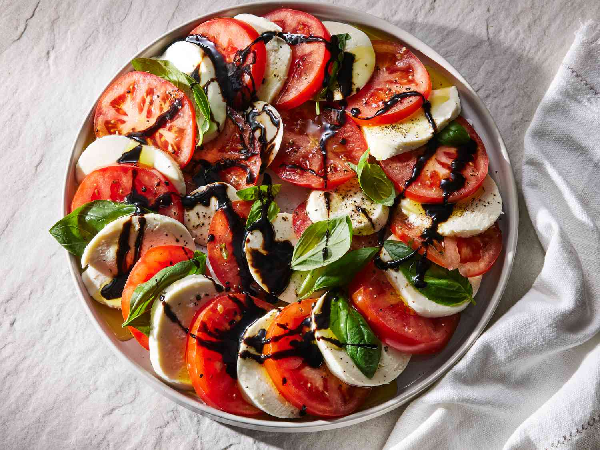

Caprese Salad with Balsamic Glaze

Description
A fresh and elegant starter that brings the taste of Italy to your table. This Caprese Salad layers juicy tomatoes,
creamy mozzarella, and fragrant basil, all drizzled with rich balsamic glaze and olive oil. It's visually stunning,
incredibly simple to prepare, and the perfect light appetizer to kick off a gourmet meal — no cooking required.
Ingredients
- 3 ripe tomatoes (heirloom or Roma)
- 8 oz fresh mozzarella (sliced)
- Fresh basil leaves
- 2 tbsp balsamic glaze (store-bought or reduced balsamic vinegar)
- 2 tbsp extra virgin olive oil
- Salt & pepper to taste
Steps
- Slice tomatoes and mozzarella into ¼-inch thick rounds.
- Layer tomato, mozzarella, and basil leaves alternately in a circular pattern.
- Drizzle olive oil and balsamic glaze evenly over the top.
- Season with a pinch of salt and freshly cracked black pepper.
- Serve immediately or chill for 5–10 minutes.
- Optional: Add a touch of flaky sea salt or a balsamic reduction for flair.